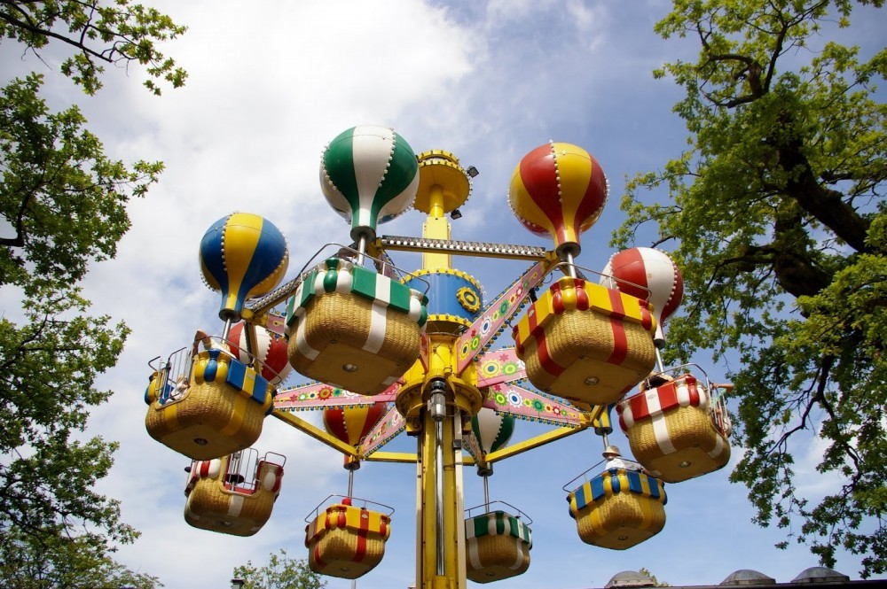
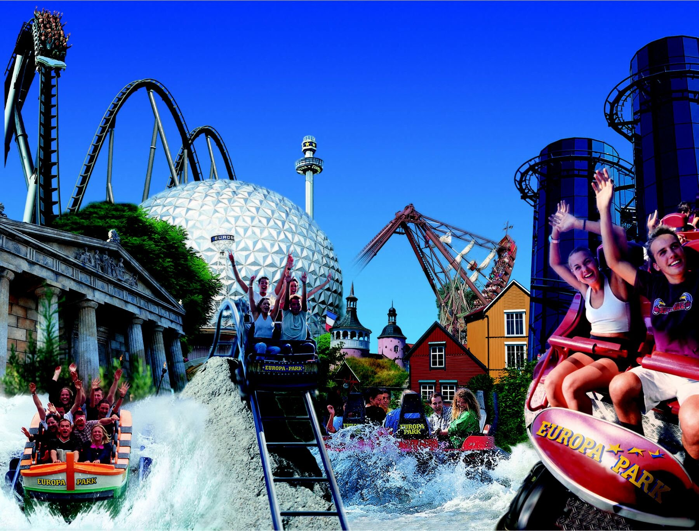
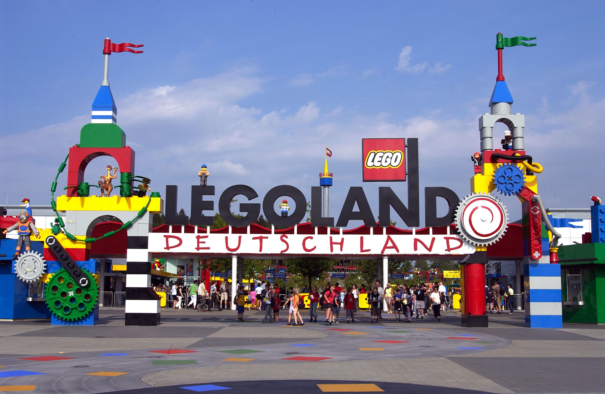

Bakken, Danemarca
Dyrehavsbakken, denumit în mod obișnuit Bakken, este un parc de distracții lângă Klampenborg, dar care aparține Lyngby-Taarbæk Kommune, Danemarca, la aproximativ 10 km nord de centrul orașului Copenhaga. Acesta a fost deschis în 1583 și este cel mai vechi parc de distracții din lume.
Europa Park, Germania
Cel mai mare și mai vizitat parc de distracții din Germania se află în Rust, la 90 km de Basel și la 175 km de Stuttgart, așa că vă va fi simplu să ajungeți, de la aeroport, cu un shuttle special. Odată ajunși, intrați în atmosfera a 15 lumi, de la Franța la Islanda sau Irlanda, redate prin intermediul arhitecturii, vegetației specifice sau a delicioaselor preparate culinare, și vă bucurați de cele peste o sută de atracții, de la roller-coaster-uri pentru toate vârstele și până la Atlantica SuperSplash. 
Mai multe detaliiPortAventura, Spania
La doar o oră distanță de Barcelona se află un parc ce își merită pe deplin locul printre cele mai populare parcuri de distracții din Europa, care vă invită să pătrundeți în șase lumi diferite, din Polinezia în Mexic și din Mediterana în îndepărtata China. Noul Ferrari Land, deschis de curând, e încă mai incitant, ca un templu dedicat vitezei, inovațiilor tehnice și adrenalinei.
Legoland, Germania
La o oră de Stuttgart și 1,5 de Munchen se află un Legoland® celebru, inspirat de originalul Legoland® Billund, perfect pentru copiii cu vârste între 2 și 12 ani, dar plin de atracții amuzante și pentru adulții cu chef de joacă. 
Mai multe detaliiGardaland, Italia
Chiar lânga Lacul Garda, la doar câțiva kilometri de Verona, se află un complex ce se numără printre cele mai populare parcuri de distracții din Europa, cu cele 32 de atracții ale sale organizate în patru sate tematice.

Mirabilandia, Italia
Parcul Mirabilandia este un parc de distractii cu teme acvatice in Emilia-Romagna. Suprafata totala este de 850.000 mp, din care 300.000 sunt ocupati de parcul tematic, 100.000 de zona acvatica si restul de locuri de parcare, fiind cel mai mare parc de distractii din Italia.